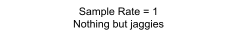
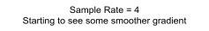
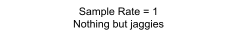
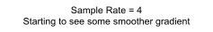

This project took us through the basics and challenges of rasterization: drawing triangles, implementing antialiasing by supersampling, implementing transforms, leveraging barycentric coordinates, performing pixel sampling for texture mapping, and finally, using mipmaps for efficient texture antialiasing. What was especially interesting was seeing the various image quality improvements come at the costs of increasing computational complexity and memory. For instance, supersampling takes a lot more memory, but produces very high quality images. Throughout the project, we constantly encountered rounding and floating point errors. It introduced us to the high level of detail required to correctly sample pixels and textures.
To rasterize a triangle, we first must define a bounding box, which is the smallest box that can encompass a given triangle. This is found by finding the leftmost, topmost, bottommost, and rightmost coordinates of the given 6 points. This allows us to start a nested for loop that starts from the top left of a bounding box and goes into the bottom left, iterating through all the points in the box.
Now, we had to check if the center of a point (which is calculated by simply adding 0.5 to the point) was within the bounds of the provided triangle. To do this, we created an inside() helper function, which takes in an (x, y) coordinate, as well as the 6 x/y values of the triangle, and then calculates if the point is inside the triangle using the three line test. In this case, we returned a true value if the result was >= 0, so this includes edge cases.
There's a slight caveat to this. The winding order of the triangle, that is the rotational direction the points are provided in, affects the results of the inside function. We had to first check the rotation of the triangle before passing in any values, and swap two of the coordinates to flip the winding order.
Once we know a point is inside the triangle, we can call the provided rasterize_point() function to fill in the sample buffer at that pixel with the provided color. Running on test4.svg gives us the following result:
This algorithm is one that checks every sample within the bounding box of a triangle. However, we added a speed up to the algorithm. This was done by only checking if every other pixel was inside of the triangle as we iterate over the x positions. As such, we would only be checking half as many times in most cases. Once we know we’re firmly inside the triangle, we can simply add the pixel from the x position before the current one into the triangle without checking. The only extra thing to account for was literal edge cases, in which we either enter or leave the triangle. Once we enter the triangle and once we leave it, we check if the x-position before the current needs to be filled in as well.
In addition to this, we also added some more basic speedups, like parallelizing the for loops and exiting the inside function early if a negative value was encountered. The below tests compare our sped up times on the cube against default times.
Supersampling is a relatively simple algorithm that can antialias a triangle. This is done by essentially getting a more detailed look at a given pixel, dependent on the sample rate. Instead of a boolean true or false per pixel, we can now compute the average of the subpixels, allowing us to create a gradient, a smoother transition between triangle colors.
Adding antialiasing by supersampling required a simple modification to the current rasterizer function. We added an additional two nested for loops which would loop through all the subpixels of a given coordinate, as determined by the sample rate. The range of these for loops would be determined by the square root of the sample rate, thus creating a square containing a number of subpixels equal to the sample rate.
To find each subpixel, we would take the (x, y) coordinate of the current pixel, and add the corresponding i and j values from the added nested for loops divided by the size of the subpixel, as well as adding 0.5 / size to the position to reach the center of the subpixel.
From there, we could pass in the subpixel location to the inside triangle checker, and if it is, then store the color in the sample buffer (indexed to accommodate for the subpixels using the sample rate and the i and j values). One thing we had to do was increase the size of the sample buffer when the sample rate was increased, which was done by adding a line that did this in the clear_buffer() function.
Finally, when it came to resolving to the framebuffer, we had to average the colors out for all the subpixels in a given pixel. We added a for loop to that function which simply used the sample rate as a range to iterate through the given pixel in the sample buffer, adding whatever color it encountered to the sum. This total was divided by the sample rate to find the average color, which then goes on to be the color of the pixel.
As we can see, the triangle becomes progressively smoother as the sample rate increases. This is because as the sample rate increases, so too does the number of subpixels that are computed, and a smoother gradient can be calculated. For example, with a sample rate of 4, there are three gradients between red and white possible (1 red 3 white, 2 red 2 white, or 3 red 1 white). However, with a sample rate of 16, we get fifteen possible gradient colors.
In addition, as the sample rate increases, we approach the mathematical edge of the triangle, thus allowing for a more accurate sample.
Task 3 involved a simple filling out of matrices to perform each transform. For our custom robot pose, we made it do a handstand. This was done by first flipping the entire robot by 180 degrees. This was done by flipping the torso, as all the other parts were attached to that and would stick with it. Then we rotated one of the upper arms by 90 degrees, and the other arm by 270 degrees to get them pointed downwards. Finally, we added a small translation to reattach the arms to the body.
Barycentric coordinates are a system that allows one to determine if a point is inside a triangle. The coordinates consist of (𝛼, 𝛽, 𝛾), and if all of them for a point are positive, then the point is inside a triangle. Said point can also be calculated as 𝛼A + 𝛽B + 𝛾C = (x, y), given 𝛼 + 𝛽 + 𝛾 = 1.
Barycentric coordinates are also able to linearly interpolate points, where the value of a given coordinate determines how close it is to its corresponding point from the opposite edge. For example, the barycentric coordinates (1, 0, 0) would be equal to point A and be the exact shade of red that is specified at A. However, coordinate (0, 0.5, 0.5) would be directly below point A at the base of the triangle, on line (B, C). This is because it’s as far away from A as possible in linear space, but also halfway between both B and C. The color would be the average between blue and green with zero red, which is cyan
Below is an example of a color wheel formed using barycentric coordinates and triangles, with the sample rate set to 1. Despite the default sample rate, we still see a smooth gradient between colors because we’re interpolating the colors at each point.
Pixel sampling is a texture mapping technique that maps a pixel within a triangle to its corresponding (u, v) coordinate in the texture space. This allows textures provided by a texture map to be placed into a triangle. To apply the texture, first we need to evaluate the (u, v) coordinate. This was done using barycentric coordinates, in which alpha, beta, and gamma were mapped to u0, u1, u2 respectively (and the same for the v values). The resulting (u, v) coordinate could then be passed into a texture sampling function, either sampling the nearest texel or doing a bilinear interpolation.
Sampling the nearest texel was a simple rounding of the (u, v) values, multiplied by the width-1 and height-1 of the texture map. We return the color of the texel.
Sampling bilinear interpolation was a little bit trickier. To do this, we had to find the four closest texels to our (u, v) coordinate. This was done with rounding and some subtraction by 1 for the different locations. Once the color of those texels were found, we could then pass them into the lerp() function (with calculated s and t values using the texels’ centers), finding the weighted average color for the rows, and once again vertically to get the weighted average color between all 4 texels.
The above images show the difference between nearest pixel sampling and bilinear pixel sampling. This difference is most pronounced in the top two images, where the longitude lines using nearest pixel sampling are broken, while they are continuous in the bilinear pixel sampling. Even with the sample rate bumped up, while the dashed lines are fixed, it’s clear to see that the color doesn’t transition as smoothly as the bottom right image which used bilinear pixel sampling.
This can be attributed to the fact that the nearest pixel sampling method can sometimes skip over the white longitude line if the blue ocean in the texture map happens to be closer to a given pixel. Bilinear sampling finds the weighted average, so a gradient can be found. Even when sample rate is buffed, the nearest pixel sampling method is more discrete, and so the transition isn’t as smooth.
The idea of level sampling is, for each sample, to sample from the texture file at the level whose resolution best approximates the screen sampling rate. To implement mipmaps, we first calculated L, which represents the length in pixels of the projection of neighboring screen space samples to texture space. We then were able to use this result to determine the correct texture level D at which to sample from. At a high level, we used the level sampling approach for texture antialiasing, which comes at a small memory cost (~33% more memory). With regards to pixel sampling, bilinear sampling uses 4 texel reads and 3 lerps, while trilinear sampling with mipmaps uses 8 texel reads and 7 lerps. However, the antialiasing improvements of trilinear sampling using mipmaps drastically outweigh its speed costs.
The two level zeros don’t see much of a difference beyond subtle smoothing quality in the bilinear sample, but the difference between a mipmap level of zero and using the nearest level is night and day looking at this banana spot. Finding the nearest level blurs and smooths the image considerably, but it’s also notable seeing the difference between nearest pixel sampling and bilinear pixel sampling. The nearest pixel sampling is more noticeably discrete in its color transition, especially towards the right side of the spot. This issue doesn’t occur with the bilinear pixel sampling method.